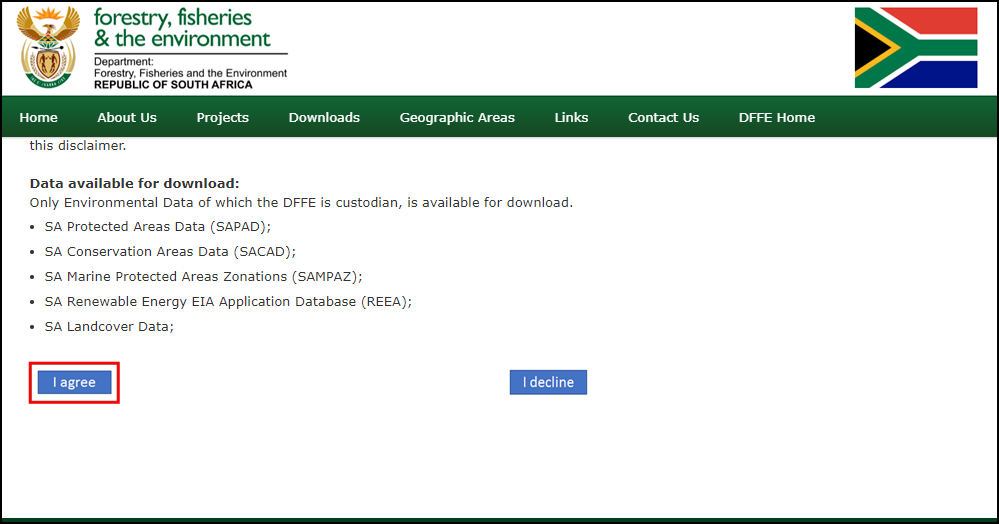
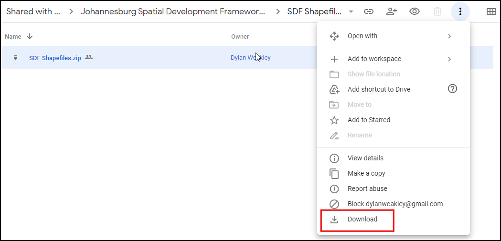
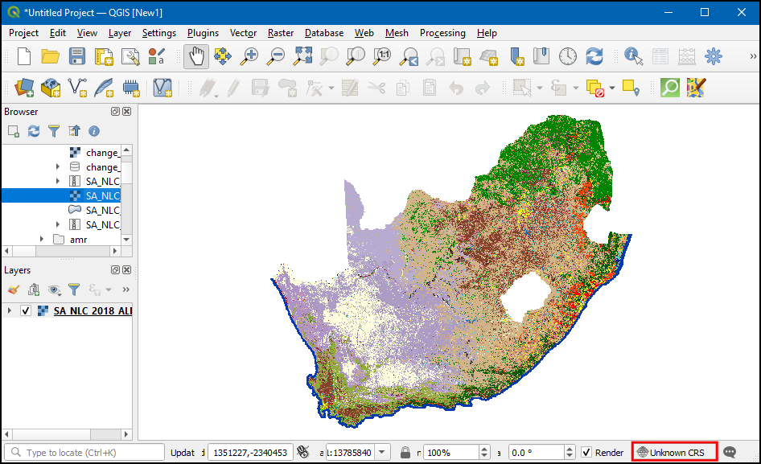
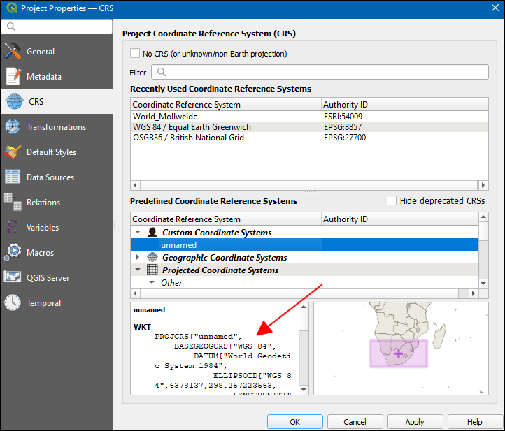
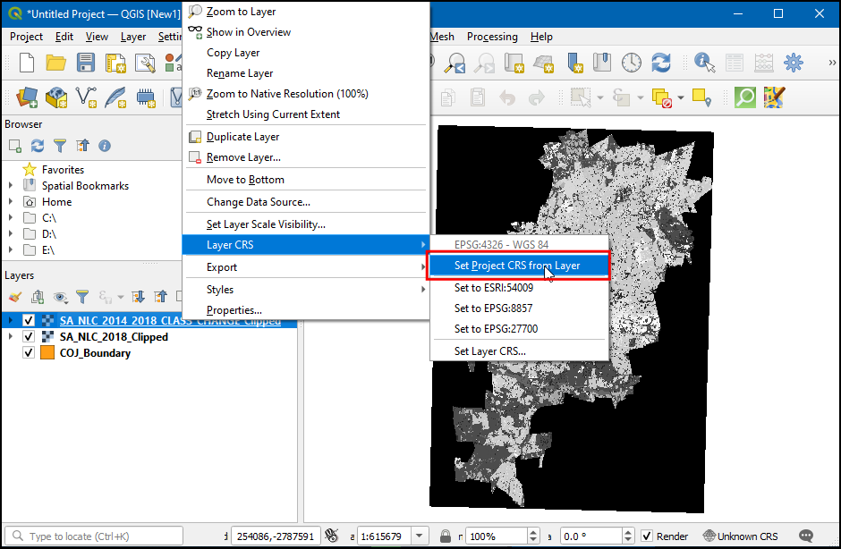
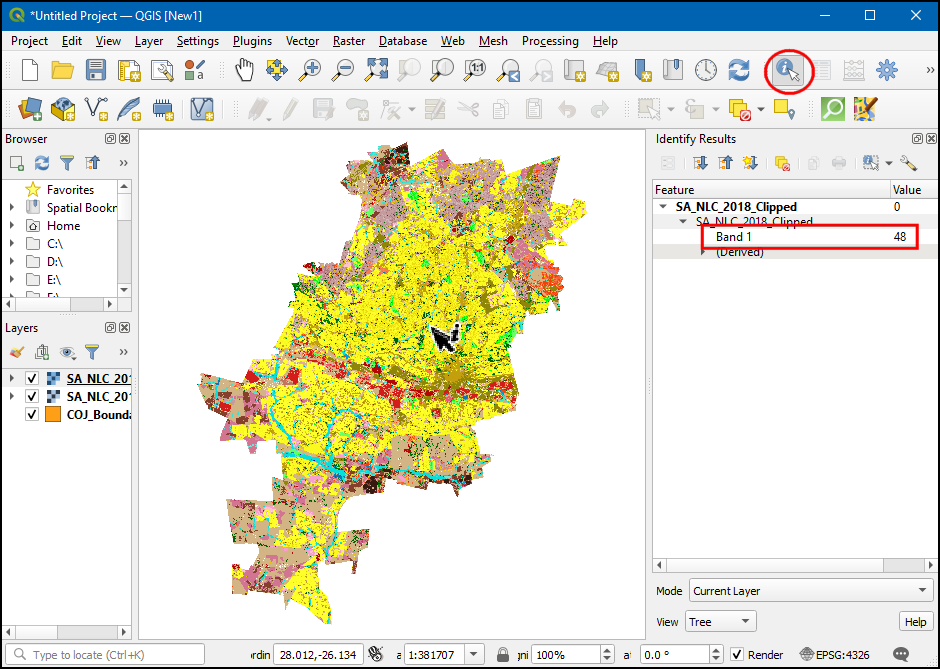
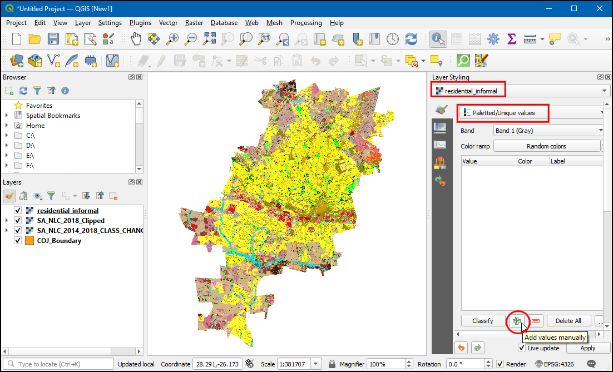
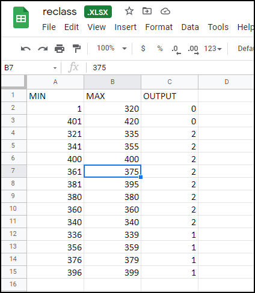
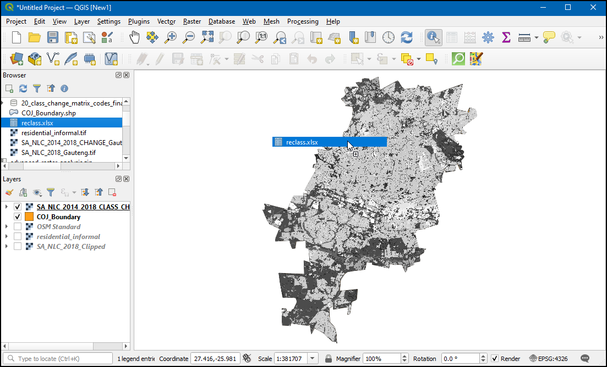

Ujaval Gandhi
Ujaval GandhiNapredna rasterska analiza (QGIS3)¶
U prethodnom tutorijalu Osnovno stilizovanje i analiza rastera (QGIS3), učili ste o izvođenju rasterske algebre pomoću Raster Calculator. Ovaj tutorijal se nadovezuje na ove tehnike i pokazuje vam kako da koristite druge alate za rastersku analizu iz Processing Toolbox-a. Naučićete kako da obrađujete rastere Land Use Land Cover (LULC) u QGIS-u kako biste izvukli određene vrste klasa pokrivača zemljišta i promene na mapama.
Pregled zadatka¶
Koristićemo skup podataka o nacionalnom pokrivaču zemljišta Južne Afrike da bismo identifikovali i izdvojili neformalna naselja u gradu Johanesburgu, Južna Afrika. Takođe ćemo koristiti skup podataka o proceni promena da bismo identifikovali obrasce urbanog rasta u gradu od 2014. do 2018. godine.
Druge veštine koje ćete naučiti¶
Kako ponovo projektovati rasterske podatke u drugu projekciju.
Kako učitati Eksel datoteku u QGIS.
Kako podesiti transparentnost rasterskog sloja u QGIS-u.
Dobijte podatke¶
Preuzećemo sledeće skupove podataka za ovaj tutorijal
Skup podataka o nacionalnom pokrivaču zemljišta Južne Afrike za 2018. godinu: Novi skup podataka o nacionalnom pokrivaču zemljišta Južne Afrike za 2018. godinu generisan je iz višesezonskih satelitskih snimaka Sentinel 2 od 20 metara i sadrži 73 klase pokrivača zemljišta.
Procena promena pokrivenosti zemljišta Južne Afrike za 2018. godinu: Ovaj skup podataka upoređuje promene u 20 klasa pokrivenosti zemljišta od 2014. do 2018. godine.
COJ Boundary: Datoteka oblika granica za grad Johanesburg, Južna Afrika.
„Ekološki geografski informacioni sistem (E-GIS) <https://egis.environment.gov.za/>”_ pruža pristup ekološkim geoprostornim podacima za Južnu Afriku. Preuzećemo rasterske podatke Južnoafričkog nacionalnog pokrivača zemljišta (SANLC) sa ovog portala.
Posetite stranicu Preuzimanje GIS podataka. Kliknite na Slažem se da biste prihvatili Uslove korišćenja i nastavili.

Moraćete da kreirate besplatan nalog da biste preuzeli skup podataka. Kliknite na Želim da kreiram nalog i pratite uputstva za kreiranje naloga.

Kada se prijavite, potražite South African National Land Cover (SANLC) 2018 Computer Automated Land Cover (CALC). Ovaj skup podataka je dat u 2 različite projekcije. Za ovaj tutorijal, preuzećemo skup podataka ALBERS. Kliknite na njega da biste preuzeli datoteku SA_NLC_2018_Albers_CALC_data.zip.

Zatim, potražite Novi skupovi podataka o proceni promena u Južnoj Africi (SANLC) za 2014. i 2018. godinu, kompjuterski automatizovani skupovi podataka o pokrivenosti zemljišta (CALC) i kliknite na SA_NLC_2014_2018_CLASS_CHANGE_CALC (Skup podataka i izveštaj) da biste preuzeli datoteku SA_NLC_2014_2018_CLASS_CHANGE_ALBERS_CALC.tif.vat.zip.

Grad Johanesburg <https://www.joburg.org.za/>`_ objavljuje prostorne skupove podataka kao deo „Okvira prostornog razvoja 2040 (SDF) za Johanesburg <https://www.joburg.org.za/documents_/Pages/Key%20Documents/policies/Development%20Planning%E%BC%86%20Urban%20Management/Citywide%20Spatial%20Policies/Spatial-Development-Framework-2040.aspx>`_ podataka. Preuzećemo šejpfajl granica sa ove stranice.
Kliknite na link za preuzimanje http://bit.ly/joburg-sdf-16.

Kliknite na direktorijum „SDF Shapefiles“.

Preuzmite datoteku „SDF Shapefiles.zip“ i raspakujte je u fasciklu.

Radi vaše udobnosti, skraćena verzija potrebnih slojeva je dostupna na linku ispod:
Procedura¶
U pregledaču pronađite preuzetu i raspakovanu fasciklu. Proširite je i prevucite i ispustite datoteku „SA_NLC_2018_ALBERS_CALC.tif“ na platno.

Kada se sloj učita, primetićete da će CRS biti podešen kao Nepoznati CRS u donjem desnom uglu. Dvaput kliknite na njega da biste otvorili dijalog prozor Svojstva projekta - CRS.

Na dnu ćete videti pregled obima projekcije. Ova Nepoznata CRS je prilagođena Lambertova projekcija jednakih površina definisana za Južnu Afriku. Kasnije ćemo ponovo projektovati ovaj sloj na drugu projekciju. Kliknite na OK.

Učitajte još dva sloja
SA_NLC_2014_2018_CLASS_CHANGE_ALBERS_CALC.tifiCOJ_Boundary. Videćete da rasterski sloj pokriva celu zemlju. Za našu analizu, zanima nas samo područje koje pokriva slojCOJ_Boundary. Sada ćemo iseći rasterski sloj na ovaj region. Idite na: menuselection:Processing –> Toolbox –> GDAL –> Raster ekstrakcija –> Alat Iseci raster pomoću maske sloja. Dvaput kliknite da biste ga otvorili.

U Clip Raster by Mask Layer, izaberite
SA_NLC_2018_ALBERS_CALCkao Input layer, zatimCOJ_Boundarykao Mask layer. Takođe imamo opciju da ponovo projektujemo podatke u drugu projekciju. Dobra je praksa da sve slojeve podataka držite u istoj projekciji. Ponovo ćemo projektovati rastere kako bi se CRS podudario sa slojemCOJ_Boundary. IzaberiteEPSG:4326 - WGS 84kao Target CRS.

Podrazumevani format izlaznih podataka je GeoTiff. GeoTiff datoteke mogu postati veoma velike ako se ne kompresuju. Dobra praksa je da uvek primenite kompresiju bez gubitaka prilikom kreiranja novih rasterskih slojeva. Proširite Napredni parametri i izaberite
Visoka kompresijakao Profil. Zatim, kliknite na dugme...pored Odsečeno (maska) i izaberite Sačuvaj u datoteku… da biste uneli ime sloja kaoSA_NLC_2018_Clipped. Kliknite na Pokreni.

Kada se algoritam završi, ne zatvarajte prozor. Primenićemo istu operaciju na drugi rasterski sloj. Pređite na karticu Parameters i promenite Input layer na
SA_NLC_2014_2018_CLASS_CHANGE_ALBERS_CALC. Zadržite sve ostale opcije, ali promenite ime izlaznog sloja naSA_NLC_2014_2018_CLASS_CHANGE_Clipped. Kliknite na Run.

Oba isečena sloja će sada biti učitana na platno. Izaberite originalni sloj i kliknite na Ukloni sloj da biste ih uklonili.

Sva tri preostala sloja su sada u istom CRS-u. Sada možemo da promenimo CRS projekta na CRS slojeva. Kliknite desnim tasterom miša na bilo koji isečeni sloj i izaberite .

Sada će CRS projekta biti podešen na
EPSG:4326. Premestite sloj SA_NLC_2018_Clipped na vrh.

Kliknite na SA_NLC_2018_Clipped i koristite alatku identifiky u Attributes Toolbar da biste kliknuli na sliku i pregledali vrednosti piksela. Videćete da se vrednosti piksela kreću od 1 do 73. Ove vrednosti predstavljaju posebnu klasu korišćenja zemljišta/pokrivača zemljišta.

Klase skupova podataka su opisane u „SANLC 2018 prezentaciji“, koja se može preuzeti sa EGIS portala <https://egis.environment.gov.za/sa_national_land_cover_datasets>. Za ovu vežbu, zanimaju nas neformalna naselja predstavljena brojevima klasa od 51 do 54.
Hajde da izdvojimo piksele koji pripadaju ovim klasama. Idite na . Dvaput kliknite da biste ga otvorili.

Kliknite na dugme
...pored Ulazni slojevi. Izaberite slojSA_NLC_2018_Clippedi kliknite na U redu. Zatim kliknite na dugmeeda biste otvorili prozor izraza.

Unesite sledeći izraz da biste izabrali piksele iz klase 51-54. Izvorna slika ima samo jednu traku. Sufiks
@1označava broj trake. Kliknite na OK da biste zatvorili prozor izraza.
"SA_NLC_2018_Clipped@1" >= 51 AND "SA_NLC_2018_Clipped@1" <= 54
Zatim, kliknite na dugme
...pored Izračunato i izaberite Sačuvaj u datoteku….

Nazovite izlaznu datoteku
residential_informal.tifi kliknite na Pokreni.

Kada se proces završi, novi sloj, „residential_informal“, biće dodat u QGIS. Ovaj rasterski sloj ima samo vrednosti od dva piksela - „1“ gde je naš izraz vrednovao vrednost true i „0“ gde je vrednost false. Pikseli koji izgledaju belo pripadaju klasama neformalnih naselja. Bolje ćemo stilizovati ovaj sloj kako bismo jasno videli neformalna naselja. Kliknite na dugme :guilabel:„Otvori panel za stilizovanje sloja“.

Izaberite sloj „residential_informal“ i promenite renderer na Paletted/Unique values. Kliknite na dugme Dodaj vrednosti ručno (+).

Promenite Value na
1i unesiteResidential Informalkao Label. Izaberite boju po vašem izboru.

Sada možemo da vidimo sva neformalna naselja u gradu Johanesburgu. Bilo bi korisno da ih vidimo u kontekstu sa osnovnom mapom. Imamo pristup raznim osnovnim mapama iz dodatka QuickMapServices. Kada instalirate dodatak, idite na da biste dodali sloj OpenStreetMap.

Sada možete lako identifikovati i proveriti da li je naša analiza pravilno identifikovala neformalna naselja. Možete izabrati sloj „residential_informal“ i preći na karticu „Transparency“ u panelu za stilizovanje slojeva. Možete smanjiti „Global Opacity“ da biste videli i izdvojene piksele i osnovnu mapu zajedno.

Sada ste završili prvi deo tutorijala. Sada ćemo koristiti rasterski sloj
SA_NLC_2014_2018_CHANGE_Clippedda bismo identifikovali regione koji su urbanizovani između 2014. i 2018. godine. Isključite sve slojeve osimSA_NLC_2014_2018_CHANGE_Clipped, a zatim kliknite na dugme Otvori panel za stilizovanje sloja. Pređite na karticu Transparentnost i unesite0u Dodatna vrednost bez podataka. Ovo će postaviti piksele sa vrednošću 0 na transparentne.

Koristite alatku Identify u Attributes Toolbar da biste kliknuli na sliku i pregledali vrednosti piksela. Videćete da se vrednosti piksela kreću od 21-420. Svaka vrednost označava prelaz iz jedne od 73 izvorne klase u drugu klasu.

Preuzimanje podataka dolazi sa tabelom pod nazivom „lcccodes.xlsx“. Ova tabela sadrži tabelu 03 urban_change_codes koja daje više detalja o svakoj vrednosti piksela. Zainteresovani smo za sve vrednosti piksela gde se bilo koja klasa iz 2014. promenila u klasu izgrađenosti iz 2018. Na slici ispod, one su označene plavom bojom.

Naš cilj je da mapiramo promene u izgrađenoj klasi. Primenićemo transformaciju na sloj „SA_NLC_2014_2018_CHANGE_Clipped“ tako da se sve vrednosti piksela mapiraju sa svojih originalnih vrednosti na bilo koju od sledećih vrednosti.
|
Svi pikseli koji su bili nagomilana klasa i 2014. i 2018. godine |
|
Svi pikseli koji su se promenili iz klase nenaseljenih piksela 2014. godine u klasu naseljenih piksela 2018. godine. |
|
Svi preostali pikseli |
Da bismo to uradili, potrebno je da kreiramo tabelu koja određuje ova pravila. Pošto QGIS može direktno da čita tabele, to je najpogodniji način za kreiranje ove tabele. Naša tabela treba da ima 3 kolone, „MIN“, „MAX“ i „OUTPUT“. Svaki red treba da bude opseg ulaznih rasterskih vrednosti kojima treba dodeliti izlaznu vrednost. Napravite tabelu kao što je prikazano ispod i sačuvajte je na računaru kao „reclass.xlsx“. Takođe možete preuzeti spremnu kopiju sa ovog linka - „reclass.xlsx <https://www.qgistutorials.com/downloads/reclass.xlsx>

Pronađite datoteku „reclass.xlsx“ u pregledaču. Prevucite je i ispustite u glavni prozor.

Novi sloj
Sheet1će biti dodat na Layers panel. Kliknite desnim tasterom miša na njega i izaberite Open Attribute Table. Proverite da li je list ispravno uvezen i da li imate 3 kolone pod nazivomMIN,MAXiOUTPUT. Otvorite alatku .

U dijalogu Reclasify by layer - Preklasifikuj po sloju, izaberite
SA_NLC_2014_2018_CHANGE_Clippedkao Rasterski sloj. IzaberiteSheet1kao Sloj koji sadrži prelome klasa. Izaberite poljaMIN,MAXiOUTPUTza njihova odgovarajuća polja.

Proširite odeljak Napredni parametri. Promenite Granice opsega na
min <= vrednost <= maks. Kliknite na dugme … za Reklasifikovani raster i unesite ime izlazne datoteke kaobuiltup_change.tif. Kliknite na Pokreni.

Kada se obrada završi, na platno će biti dodat novi sloj
builtup_changesa vrednostima piksela0-2. U panelu za stilizovanje slojeva Stilizovanje sloja, izaberitePaletirane/Jedinstvene vrednosti, a zatim kliknite naKlasifikuj.

Izaberite boju po svom izboru za svaku kategoriju i označite vrednosti piksela „0“, „1“ i „2“ kao „Neizgrađeno“, „Postojeće izgrađeno“ i „Novo izgrađeno“.

Sada na kartici Transparency smanjite Global Opacity i uključite sloj
OSM Standardda biste videli i piksele builtup_change i osnovnu mapu zajedno.

If you want to give feedback or share your experience with this tutorial, please comment below. (requires GitHub account)